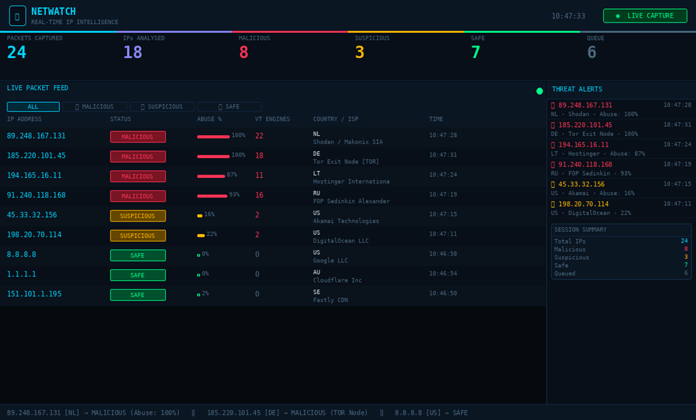
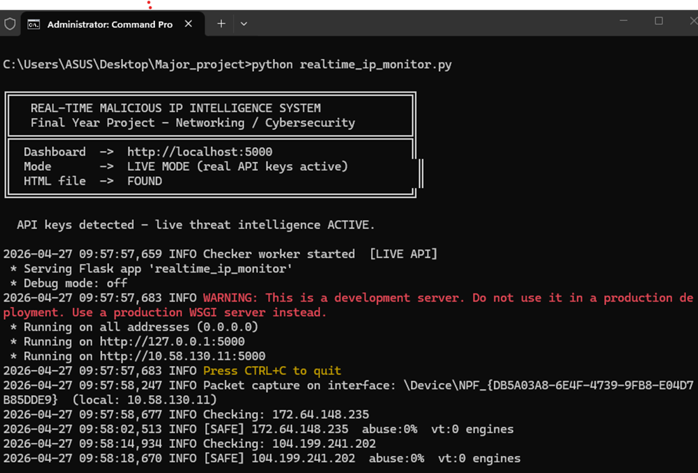
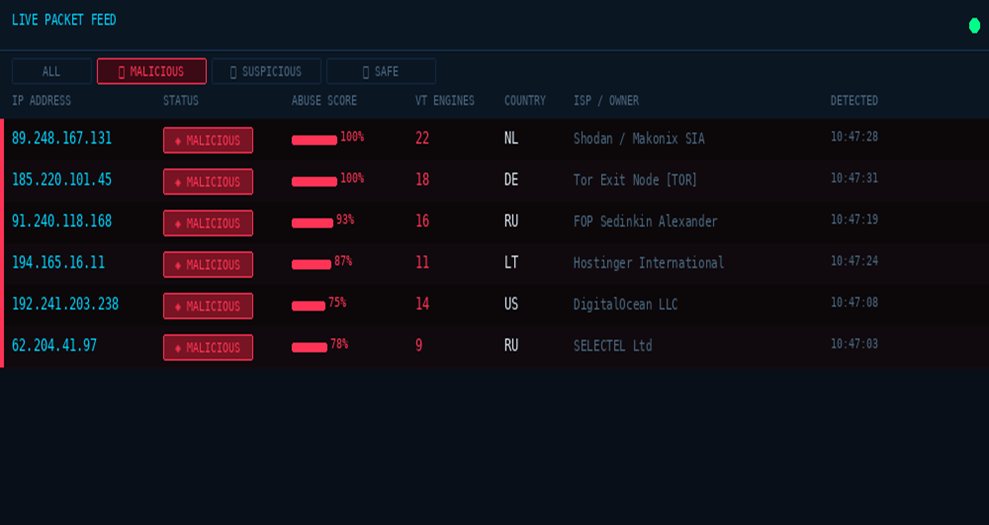
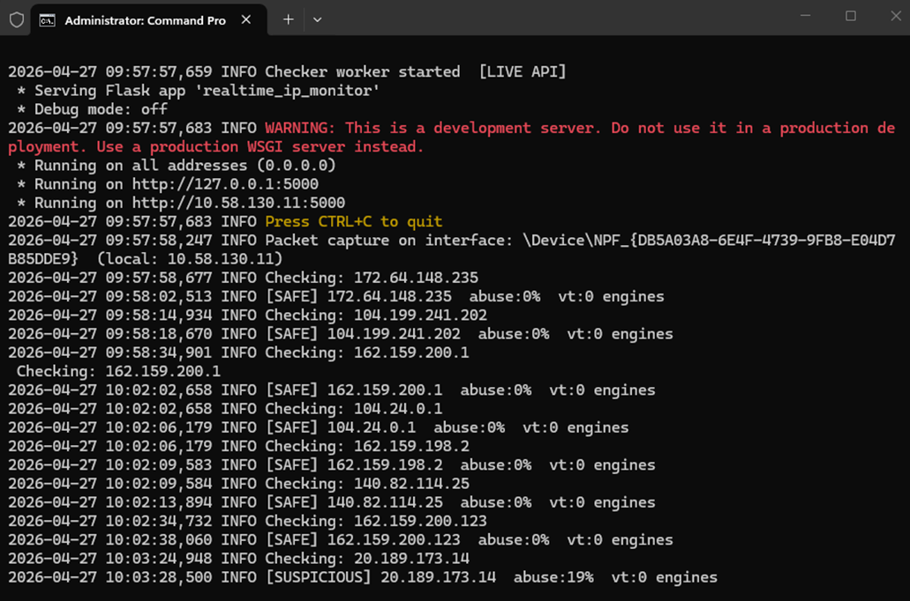

01CYBERSECURITY
Realtime Malicious IP Intelligence System
A practical threat-intelligence system that monitors IP addresses, queries reputation data and classifies activity as Safe, Suspicious or Malicious.
GitHub Profile ↗CYBERSECURITY • NETWORKING • THREAT INTELLIGENCE
B.Tech Cyber Security undergraduate at Parul University, building hands-on projects in network security, IP intelligence, Python and defensive cybersecurity.
I'm a Cybersecurity undergraduate with a practical interest in networking, threat intelligence, Linux and secure web technologies.
I am currently pursuing a B.Tech in Cyber Security at Parul University. My internship and academic projects have given me hands-on exposure to real-time IP intelligence, packet analysis and technical problem solving.
I enjoy turning security concepts into working demonstrations and continuously building my technical foundation through projects and certifications.
Programming, scripting and cybersecurity projects.
Network fundamentals, monitoring and analysis.
Packet capture and traffic investigation.
Command line, networking and system tools.
Interactive web interfaces and scripting.
Responsive web interfaces and front-end fundamentals.
Cryptographic concepts and network security principles.
Word, Excel and PowerPoint for documentation.

A practical threat-intelligence system that monitors IP addresses, queries reputation data and classifies activity as Safe, Suspicious or Malicious.
GitHub Profile ↗
Hands-on packet-capture and IP reputation workflow with a local Flask dashboard, live capture status and threat classification.
GitHub Profile ↗
A dashboard-style interface for reviewing IP status, abuse scores, VirusTotal engine counts, country/ISP data and detection time.
GitHub Profile ↗
Welcome to Pavan's cybersecurity portfolio terminal.
Type help to see available commands.
Worked on practical technology and cybersecurity-related projects, including real-time AI intelligence solutions, technical assignments, documentation and project execution.
Participated in NCC activities and an Air Force Attachment Camp (AFS), developing teamwork, discipline, leadership and organizational skills.
Interested in cybersecurity internships, projects and opportunities where I can learn, contribute and grow.
Get In Touch ↗I'm available through email, LinkedIn and GitHub.